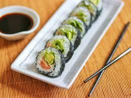
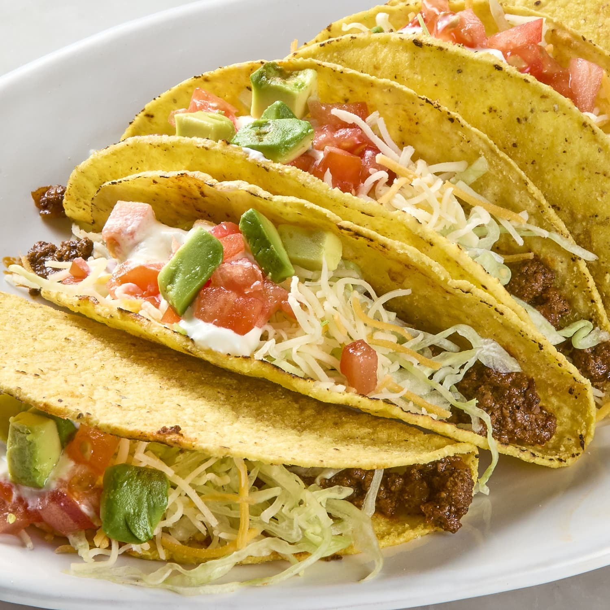

Exploring Italian Cuisine

One of Italy's most beloved dishes is **Pizza Margherita**. This classic pizza is topped with simple yet delicious ingredients like fresh mozzarella, tomatoes, basil, and a drizzle of olive oil, capturing the essence of Italian flavors.
The Rich Flavors of Indian Cuisine

In Indian cuisine, **Butter Chicken** (Murgh Makhani) is a favorite. Tender chicken pieces are cooked in a creamy, spiced tomato sauce, making it rich and flavorful. It’s often served with naan or rice.
Delightful Japanese Cuisine
**Sushi** is a staple of Japanese cuisine. It typically consists of vinegared rice paired with raw fish, such as tuna or salmon, and often includes other ingredients like avocado and cucumber, creating a fresh and delicious bite.
Exploring Mexican Flavors
One of the most popular Mexican dishes is the **Taco**. A warm tortilla is filled with a variety of ingredients such as seasoned meat, lettuce, cheese, and salsa, offering a perfect blend of flavors in every bite.